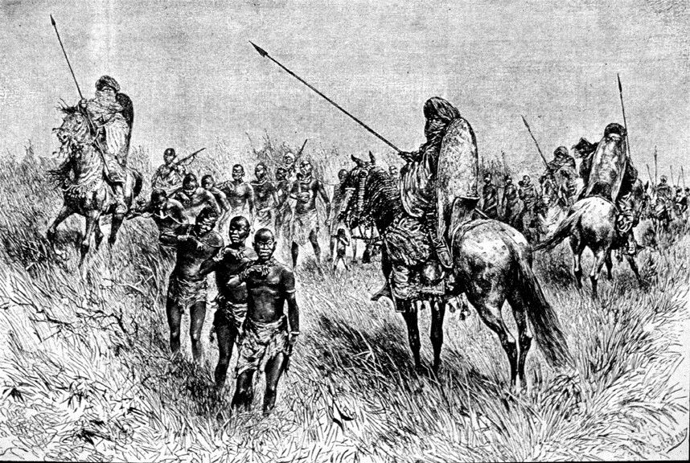
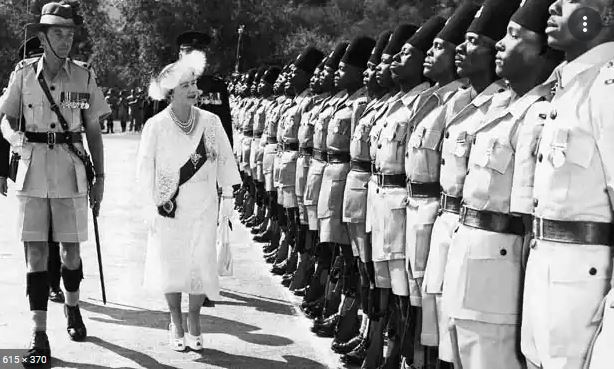
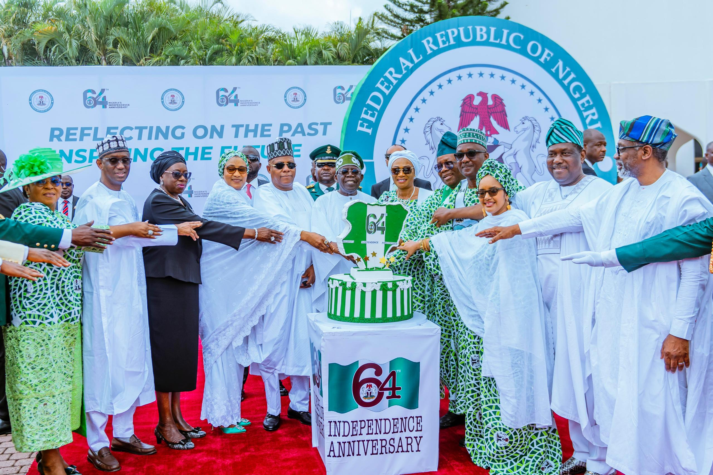
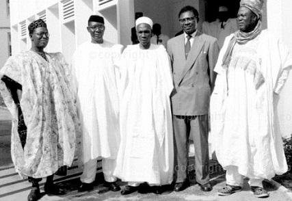
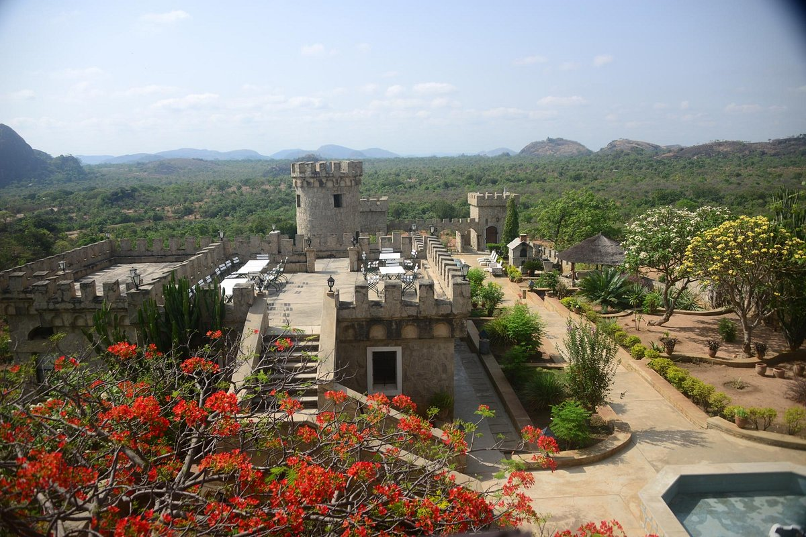

History
Explore Nigeria's legacy from ancient empires to the struggle for independence. Shaped by cultural diversity and unity, Nigeria’s journey reflects the strength of its people and their drive for self-determination.
Early History
Nigeria's early history is started by ancient civilizations, thriving trade and cultural diversity. The Nok culture was known for its terracotta art and early iron-smelting. Later kingdoms like Ile-Ife and the Oyo Empire emerged becoming centers of trade, governance and Islamic scholarship. These societies engaged in trans-Saharan trade exchanging goods like gold and kola nuts. By the 11th century, Islam spread in the north while diverse ethnic groups, including the Igbo, Yoruba and Hausa, maintained distinct cultural identities. European contact began in the late 15th century, expanding trade networks and initiating the slave trade.
Early Man in Nigeria
British Occupation
Under British rule (1861–1960), Nigeria was colonized through treaties and military force beginning with the annexation of Lagos. In 1914, the northern and southern protectorates were merged for administrative efficiency. The British used indirect rule, working with traditional leaders which caused regional disparities. The economy was structured for resource extraction, with raw materials exported to Britain while infrastructure development served colonial interests. Western education and Christianity spread in the south creating a literate elite, but the north resisted these changes.
Queen Elizabeth in Nigeria
Independence
Nigeria's independence was achieved on October 1, 1960, which marked the end of British colonial rule and the beginning of self-governance for the country. It was the result of decades of nationalist struggle led by prominent figures like Nnamdi Azikiwe, Ahmadu Bello, Obafemi Awolowo and Tafawa Balewa. The transition to independence was peaceful, facilitated by constitutional reforms in the 1940s and 1950s that gradually expanded Nigerian participation in governance. Nigeria adopted a parliamentary system with Tafawa Balewa as Prime Minister and Nnamdi Azikiwe as Governor-General. Later becoming the first President when Nigeria became a republic in 1963.
Independce Day
Leaders

Modern History
Nigeria’s modern history began with independence in 1960, followed by ethnic tensions that led to the Nigerian Civil War (1967–1970) after the Eastern Region declared independence as Biafra. The war ended with Nigeria’s reunification. Military rule dominated until 1999, marked by coups, corruption and mismanagement of the country’s oil wealth. The return to democracy in 1999 ushered in civilian governance but challenges like corruption, economic reliance on oil and ethnic tensions persisted. In recent years, Nigeria has faced issues such as the Boko Haram insurgency, economic instability and political reform struggles. Despite this, it remains Africa’s most populous country, largest economy and a cultural powerhouse.
Kajuru-Castle